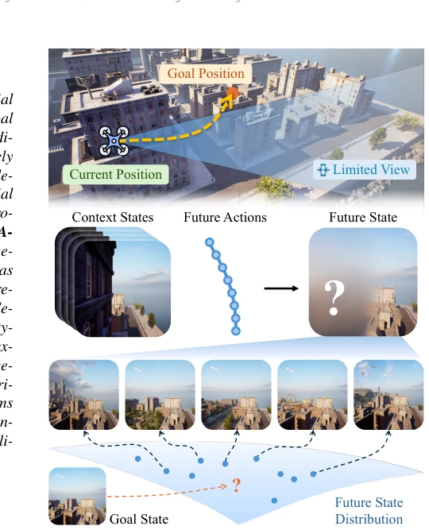
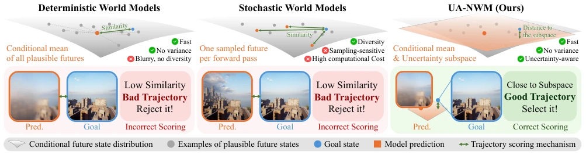
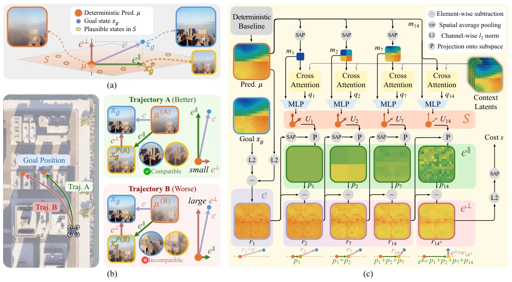
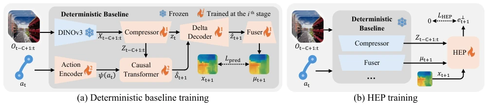
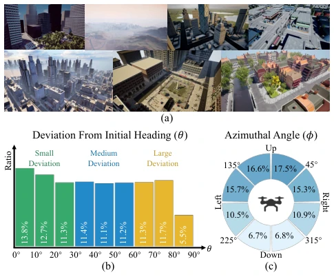
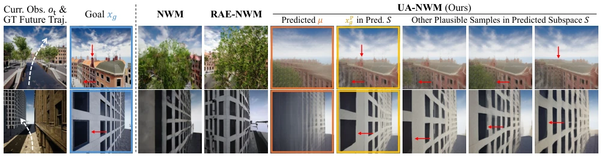
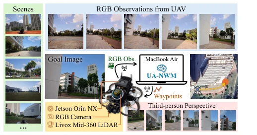
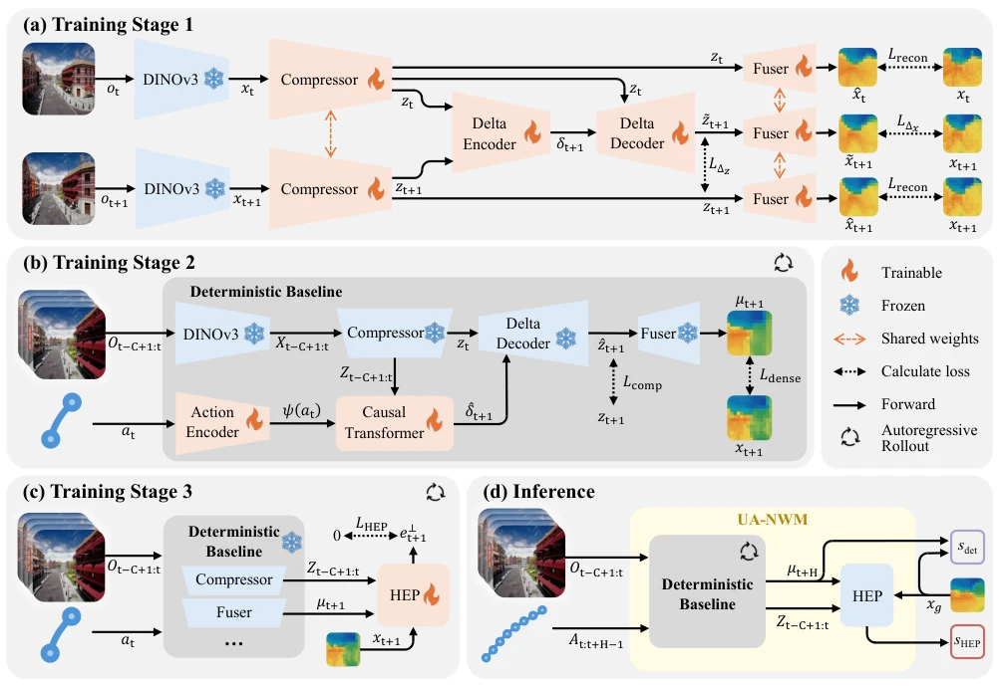
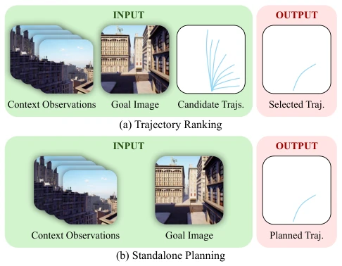
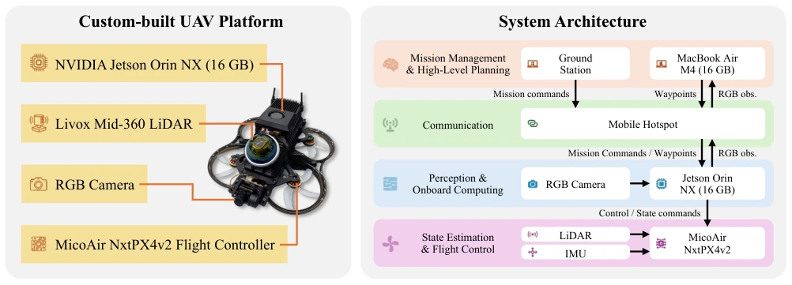

This paper performs a "de-blurring" surgery on the world model for drone navigation. The authors keenly point out that existing deterministic models compress future predictions into a "blurred image", while stochastic models rely on massive sampling to approximate the distribution, resulting in either being too slow or too unstable. UA-NWM's idea is clever: instead of guessing what the future looks like, directly build an "uncertainty subspace" to calculate "reasonable blur" and "true errors" separately. This approach is like installing an "anti-quibbling" filter on the navigation system, only penalizing trajectories that truly deviate, rather than reasonable deviations caused by occlusion or long-term drift. Although it does not employ complex diffusion models, it uses hierarchical projection to master uncertainty modeling, running exceptionally fast on drones in practice, and even enabling real-machine deployment. However, whether this method, relying on DINO features and specific subspace assumptions, remains robust in extreme dynamic scenarios is still questionable, after all, the real world is much more chaotic than the "subspace" in simulation.
In large-scale outdoor drone image target navigation, the uncertainty of future states is the core pain point. Existing world model-based methods are mainly divided into two categories: deterministic models (such as NWM [5], RAE-NWM [72]) usually output only a single prediction, causing multiple reasonable futures to collapse into a blurred average image, unable to distinguish "reasonable occlusion" from "erroneous trajectories"; Stochastic models (such as One-Step WM [52], MWM [66]) can generate diverse futures, but to accurately evaluate whether the target belongs to this distribution, they often require massive sampling, resulting in high computational costs and sensitivity to sampling randomness. This "point prediction" or "sparse sampling" scoring mechanism makes it easy for the model to incorrectly reject promising trajectories in long-range or occlusion scenarios, leading to navigation failure. Especially in urban environments, building occlusion and long-term drift make the future state distribution complex; relying solely on point comparison cannot effectively utilize uncertainty information, urgently requiring a scoring mechanism that can explicitly model the future state distribution and is efficient.

Figure 1. Illustration of future-state uncertainty.

Figure 2. Comparison of UA-NWM and previous navigation world models in terms of future prediction and trajectory scoring.
The core of UA-NWM is reconstructing trajectory scoring as a Conditional OOD Detection problem. The overall process is: first, use frozen DINOv3 to extract visual features, and predict the center point μ of the future state through a lightweight deterministic backbone network (based on DeltaWorld architecture). Next, introduce the Hierarchical Error Projection (HEP) module, not directly comparing the distance between the predicted point and the target point, but constructing an "uncertainty subspace" around μ. This subspace is modeled through a multi-scale pyramid structure, decomposing the residual e between prediction and target into two parts: the "interpretable uncertainty component" (e∥) parallel to the subspace and the "uninterpretable residual" (e⊥) perpendicular to the subspace. The HEP module utilizes context information, generates low-rank basis vectors at each scale through cross-attention and MLP, projects the residual from coarse to fine onto these bases, thereby separating out e∥. Finally, trajectory scoring is based solely on the norm of e⊥, i.e., only penalizing errors that cannot be explained by the uncertainty subspace. Training is divided into two stages: first train the deterministic backbone network to predict future features, then fix the backbone network and specifically train HEP to minimize the proportion of uninterpretable residuals. This method avoids random sampling and achieves distribution-aware robust scoring with only one forward propagation.

Figure 3. (a) Illustration of the uncertainty-aware trajectory scoring idea. Conventional deterministic methods score based on e. We divide e as e⊥and e∥, and use only e⊥for scoring. (b) An example of how uncertainty-aware trajectory scoring can improve navigation performance. (c) The overall pipeline of our proposed Hierarchical Error Projection (HEP) module.

Figure 4. The overall training procedure of UA-NWM.
The authors constructed the AirGoal-10k benchmark, containing 9000 training trajectories, covering diverse urban environments and turning angles. In offline trajectory ranking and independent planning tasks, UA-NWM outperforms baselines such as NWM [5], One-Step WM [52] on both ATE and RPE metrics, and has extremely fast inference speed (approximately 8ms/frame), far exceeding stochastic models that require iteration. In online closed-loop simulation, UA-NWM's success rate (SR) reaches 76%, significantly higher than other methods. Ablation experiments show that HEP's multi-scale structure (especially Scale 14) is crucial for performance improvement, and the effect is best when basis vector rank R=2, indicating that low-dimensional subspaces are sufficient to capture main uncertainties. Additionally, real-machine experiments were deployed on a MacBook Air, successfully achieving zero-shot sim-to-real drone navigation, verifying the method's practicality and low-latency characteristics.

Figure 5. Overview of the AirGoal-10k benchmark. (a) Diverse navigation environments. (b) Distribution of deviations from the initial heading. (c) Distribution of azimuthal angles.

Figure 6. Qualitative comparison of future predictions. The DINO latent features predicted by RAE-NWM and UA-NWM are decoded using RAE [80] and RAEv2 [55], respectively, solely for visualization. RAE-NWM and UA-NWM perform trajectory scoring directly in the latent space, whereas NWM scores LPIPS [73] of predicted RGB images. Details for latent visualization are provided in Section D.5.

Figure 7. Illustration of real-world UAV experiments.
其他图片Other Figures

Figure 8. Detailed training and inference procedure of UA-NWM.

Figure 9. Comparison of (a) trajectory ranking and (b) standalone planning tasks of the AirGoal-10k benchmark.

Figure 10. Configuration of custom-built UAV platform and system architecture for real-world experiments.